Тема №1. Полевые кабельные линии связи
Занятие №4. Прокладка и снятие полевых кабельных линий связи.
Учебные вопросы:
Литература:
- Инструкция по развёртыванию и эксплуатации полевых кабельных линий связи для соединений, воинских частей и подразделений связи Вооруженных Сил : приказ начальника Генерального штаба ВС – Первого заместителя Министра обороны Республики Беларусь №501 от 30 сентября 2003 г. – Минск : Министерство Обороны Республики Беларусь, 2003.
- Учебное пособие «Оконечная и коммутационная аппаратура проводных средств связи». – Мн.: БГУИР, 2010.
- Многоканальные системы передачи, Ч.1. Теоретические основы построения МСП. – Мн.: БГУИР, 2010.
1. Арматура, приспособления и инструмент, применяемые для прокладки полевых кабелей связи.
Комплект инструмента № 40. Предназначен для технического обслуживания и ремонта полевых кабельных линий связи. Состоит из комбинированных пассатижей, складного ножа, отвертки и карманного электрического фонаря.
Катушка ТК-2 (Рис.11), используется при эксплуатации кабелей П-274М, П-268, состоит из станка и барабана. Две боковые станины станка изготовлены из листовой стали и скреплены между собой четырьмя стальными круглыми стержнями, к одному из которых приварена скоба для направления кабеля при его намотке и размотке.
В центре каждой боковой станины размещены подшипники, в которых крепятся полуоси барабана. Барабан состоит из двух стальных дисков, скрепленных тремя полосами, которые являются основанием для намотки кабеля.На одном из дисков имеются два хомутика, в которых закрепляется конец кабеля. Барабан приводится во вращение рукояткой с помощью двух шестерен. Диаметр шестерни рукоятки вдвое больше диаметра шестерни барабана, поэтому за один оборот рукоятки барабан делает два оборота. При размотке кабеля шестерни барабана и рукоятки расцепляются с помощью переключателя хода. Рукоятка катушки при этом также устанавливается в нерабочее положение. Катушка имеет плечевой ремень для переноски. Вес катушки без кабеля - 4,5 кг, ёмкость катушки - одна строительная длина кабеля.
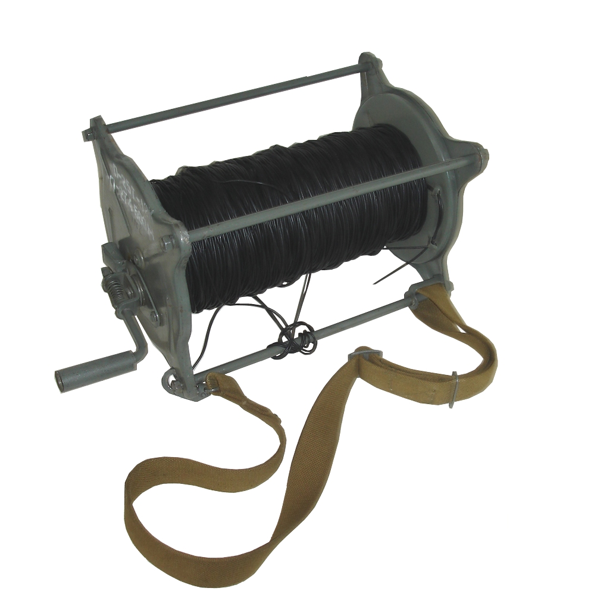Рис.11. Телефонно-кабельная катушка ТК-2
Комплект П-280 (Рис.12), предназначенный для намотки кабеля П-274М (П-274) в бухты, пригодные для бес катушечной размотки, состоит из: станка(Рис.12а); брезентовых чехлов (Рис.12б); укладочного ящика;

Станок состоит из рамы 1, съемного барабана 2, намоточной подвижной рамки 3 с механизмом укладки 4 кабеля и вала 5 с рукояткой.
Брезентовый чехол (контейнер) предназначенный для размотки легких двухпроводных полевых кабелей, состоит из корпуса 1, откидной крышки 2, застежек 3 для крепления крышки и ремней 4 для переноски контейнера. В днище корпуса имеется капроновый диск 5 с отверстиями для выхода кабеля и вырезом, закрытым листовой резиной 6, в которой сделан разрез для крепления в нем конца бухты кабеля 7. Кроме того, к днищу пришиты две перемычки 8 и 9, в которые заправляются внутренний и наружный концы бухты кабеля.
Комплект П-180М1. (Рис.13) Предназначен для прокладки(снятия) кабеля П-274М по поверхности земли бескатушечным способом. В комплект входят: станок, 10 пластмассовых косеет и вспомогательное имущество. Масса станка с косетой 4,9 кг. Масса кассеты 0,7 кг. Емкость кассеты – одна строительная длина кабеля П-274. Время намотки на кассету одной строительной длины кабеля не более 8 минут. Скорость размотки кабеля с кассет в ручную до 10 км/ч, с автомобиля до 60 км/ч.
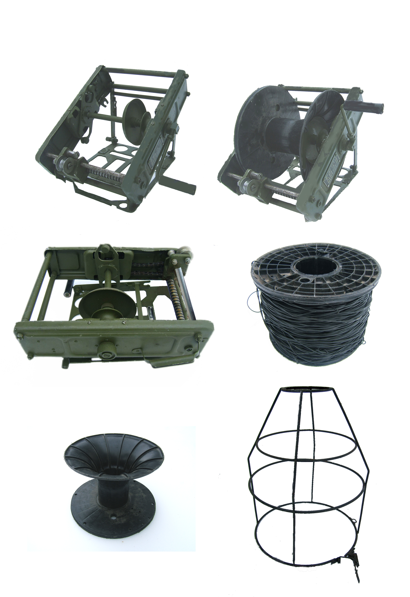Рис.13 Комплект П-180М1.
Станок для размотки (намотки) внутриузловых кабелей (Рис.13). Предназначен для установки барабанов с внутриузловым кабелем и обеспечивает размотку и намотку кабеля ПТРК, ТТВК и ВСЭК. Масса станка 10 кг.
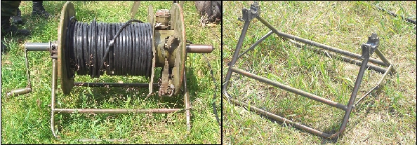Рис.13 Станок для кабеля ПТРК, ТТВК и ВСЭК
Кабельная тележка типа П-281М2
Тележка типа П-281М2 (рис.14) предназначена для размотки кабеля П-296, и П-270 при прокладке линии и для намотки кабеля при ее снятии. Тележка П-281М2 состоит из следующих основных частей: сварной рамы; опорных колес (зимой заменяются лыжами); цепной передачи; меха-низмов переключения и управления; оси кабельного барабана; рукоятки для намотки кабеля и лямок Рама имеет две продольные трубчатые балки, соединенные поперечиной, несколько смещенной к рукояткам оператора для обеспечения установки барабана с большим диаметром щек. На переднем конце балок расположены изогнутые ручки, для перевозки тележки и рукоятки управления ловителями оси барабана и тормоза.
Для переноски тележки имеются выдвижные штанги (вторая пара рукояток). Цепная передача передает вращение левого опорного колеса тележки оси барабана. Механизм переключения имеет кулачковые муфты, соединяющие ось барабана с цепной передачей. При установке рамы тележки на лыжи вращение барабана производится рукояткой. Ось кабельного барабана имеет кулачковые выступы, зацепляющиеся с торцовыми вырезами центральной трубчатой части кабельных барабанов (катушек). Ось фиксируется в барабане подпружиненным фиксатором.
Лямки используются для буксировки тележки при установке ее на лыжах. Установленная на тележке катушка (барабан) с кабелем может иметь два положения: свободное (нерабочее) при размотке кабеля и связанное с колесами (рабочее) при намотке кабеля; в рабочем положении одновременно с движением тележки вращается и катушка (барабан), автоматически наматывая кабель. Для переключения оси барабана тележка имеет специальное приспособление - стержневой замок. Стержневой замок состоит из стержня с квадратом на конце, входящим в выточку оси при включении барабана, втулки, пружины и ручки-переключателя, укрепленной с помощью шпонки на другом конце стержня.
Стержневой замок помещается в сквозном отверстии оси левого колеса тележки. Наружная сторона втулки колеса тележки имеет ту же форму, что и ручка-переключатель. При включении катушки (барабана) ручка-переключатель стержневого замка входит в углубление втулки тележки. Чтобы перевести катушку (барабан) на свободный ход необходимо ручку-переключатель потянуть на себя и, преодолевая сопротивление пружины, повернуть на 90° в любую сторону, благодаря чему ручка упрется в края втулки колеса тележки. Масса 50 кг.
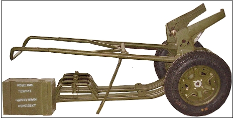Рис.14. Кабельная тележка П-281М2.
Прицепной кабелеукладчик П-283М (Рис.15). Предназначен для прокладки кабеля П-296, П-270 в грунт на большие расстояния и снятие его.
Кабелеукладчик прицепляется к автомобилю и выполняет следующие работы:
- прокладку кабеля П -296, П-270 с заглублением в грунт на 20—30 см со скоростью 5—6 км/ч;
- снятие проложенных линий с намоткой кабеля в бескатушечные бухты и катушки.
Линия большой протяженности может прокладываться без остановок, если строительные длины соединены заранее. Машину обслуживает команда из четырех человек.
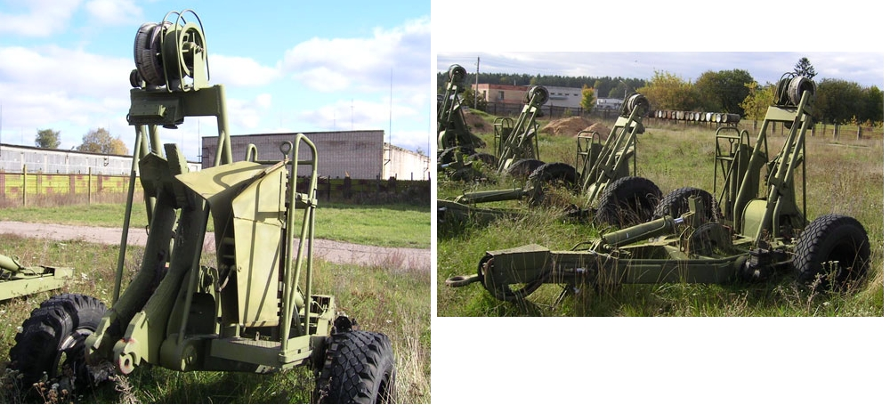Рис.15. Прицепной кабелеукладчик П-283М
Кабелеукладчик П-286 на базе тягача АТС-59.
П-286 – кабелеукладчик на базе тягача АТС-59(Рис.16а,б), предназначен для:
- прокладки ПКДС П-296 по поверхности земли с барабанов;
- заглубления в грунт кабеля, предварительно проложенного по поверхности земли;
- извлечения кабеля из грунта или снятия кабеля, проложенного по по-верхности;
Глубина прокладки кабеля – до 50 см от поверхности земли.
Состав оборудования:
- базовый гусеничный тягач:
- намоточно-размоточный станок:
- гидросистема привода намоточного станка:
- гидросистема регулирования натяжения кабеля:
- аппаратура слежения за кабелем:
- переговорное устройство и сигнализация:
- прицепное кабелеукладочное устройство:
- вспомогательное оборудование.
Технические характеристики:
- тип тягача - АТС-59;
- расход топлива при скорости 40 км/ч, л/100 км-156;
- мощность при 2600 мин-1,кВт(л.с.) – 300;
- габариты: - длина с прицепом - 10730 мм
- ширина - 3000 мм
- высота - 3600 мм
- масса – общая с кабелем - 17.9 т;
- прицепного кабелеукладчика - 1.5 т;
- возимый запас кабеля (барабанов) - до 20;
- максимальная глубина прокладки - 0.5 м;
Скорость движения:
- при прокладке по поверхности - до 6 км/ч;
- при заглублении с размоткой с бар. – до 4 км/ч;
- при заглублении проложенного - до 4 км/ч;
- при снятии с грунта - до 4 км/ч;
- при извлечении из грунта - до 3 км/ч;
- при движении по грунт. дорогам - до 30 км/ч;
- экипаж - 4 человека;
Прицепной кабелеукладчик – предназначен: для укладки кабеля в грунт при прокладке, а также вскрытия грунта над кабелем и извлечения кабеля из грунта при его снятии. Для этого имеется клиновой рабочий нож с кассетой, обеспечивающий пропуск сочленённых полумуфт кабеля при его прокладке.
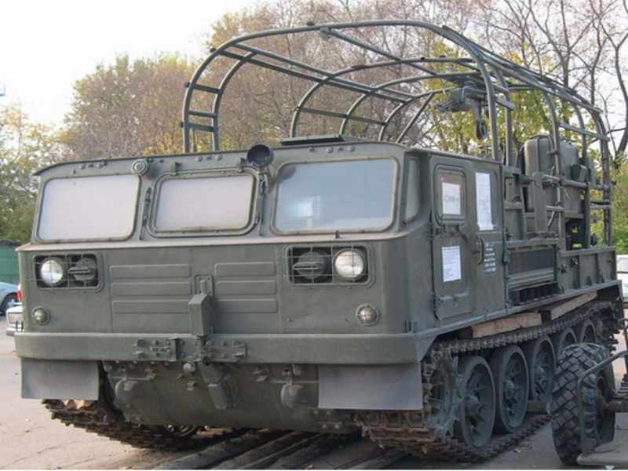Рис.16. а) Кабелеукладчик П-286 на базе тягача АТС-59
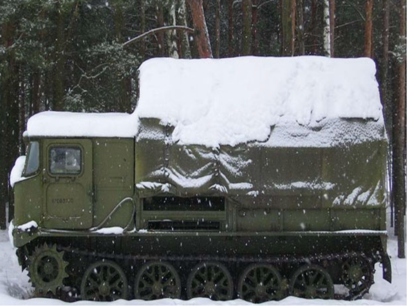Рис.16. б) Кабелеукладчик П-286 на базе тягача АТС-59
Линейно кабельные машины
Линейно-кабельные машины ЛКМ-1(Рис.17), ЛКМ-3(Рис.18), П-256Бг (Рис.19) предназначены для развертывания, свертывания и восстановления полевых кабельных линий связи.
Основные технические характеристики:
Механизированное развертывание (свертывание) для кабеля П-274М; Ручное развертывание (свертывание) для кабеля П-269, П-296М; Скорость развертывания (свертывания) кабеля П-274М не более 10 км/ч;
| Запас возимых кабелей | ЛКМ1 | ЛКМ2 | П-256г |
|---|---|---|---|
| - кабель П-274М | 10,5 км | 12 км | 7,5 км |
| - кабель П-269-2x4+1x2 | 400 м | 400 м | 200 м |
| - кабель П-269М | 1000 м | 3000 м | 750 м |
| Транспортная база | БТР-80 | МТ-ЛБу | МТ-ЛБ |
Приложение №1
Технические условия П-274 М ,П-274 МЛ, ОП-274 МЛ.
| ОСНОВНЫЕ ХАРАКТЕРИСТИКИ | ЕД. ИЗМ | П 274 М | П 274 МЛ | ОП 274 МЛ | |
|---|---|---|---|---|---|
| Электрическое сопротивление жилы | T=20°С | Ом/км | < 65 | 65 | 85 |
| Асимметрия жил, по сопротивлению | MAX | Ом | < 3 | 3 | 3 |
| Сопротивление изоляции | 1 час в воде | Мом/км | > 1000 | 1000 | 1000 |
| Количество проволок в жиле | медных | шт. | 4 | 4 | 4 |
| стальных | шт. | 3 | 3 | 3 | |
| Максимальный диаметр изолированной жилы | MAX |D| | мм | 2,3 | 2,3 | 2,3 |
| MIN |D| | мм | 1,9 | 1,9 | 1,8 | |
| Минимальная толщина изоляционно-защитной оболочки | |s| | мм | 0,5 | 0,5 | 0,5 |
| Наружный размер провода | MAX |Dn| | мм | 4,6 | 4,6 | 4,6 |
| Кратность шага скрутки эл. жилы | х|d| | мм | 20 | 20 | 20 |
| Шаг скрутки изолированных жил в пару | мм | 80 | 80 | 80 | |
| Медная проволока МТ, диаметром | |d| | мм | 0,3 | 0,3 | 0,27 |
| Стальная проволока, диаметром | |d| | мм | 0,3 | 0,3 | 0,27 |
| Защитное покрытие стальной проволоки | Цинк | Латунь | Латунь | ||
| Разрывное усилие изолированной жилы | не менее | кГс | 40 | 48 | 40 |
| Вес | кг/км | 15 | 14,7 | 13,4 | |
2. Порядок прокладки полевых кабельных линий связи на различной местности.
Полевые кабели могут прокладываться непосредственно в грунт, по поверхности земли, в грунт после предварительной прокладки по поверхности земли (комбинированный способ).
Выбор способа прокладки кабеля определяется: условиями боевой обстановки, наличием средств механизации, рельефом местности, состоянием грунта и погодными условиями.
Основным способом является прокладка кабеля непосредственно в грунт на глубину до 0,5 м кабелеукладчиком.
Прокладка кабеля по поверхности земли может осуществляться с помощью кабелеукладчика, специально оборудованных мотоциклов связи, тележек (типа П-281), с автомобиля или вручную, а также бункерным способом. При прокладке кабеля в грунт кабелеукладчиком линейная команда должна включать 8 человек: начальника линейной команды; экипаж кабелеукладчика; группу фиксации и линейного надсмотрщика (оператора-измерителя). В состав экипажа кабелеукладчика входят: начальник экипажа (он же оператор № 1); механик-водитель и два линейных надсмотрщика (операторы № 2 и 3).
Группа фиксации включает старшего группы (старшего линейного надсмотрщика) и водителя транспортного автомобиля. Она предназначена для маскировки проложенного кабеля, оборудования переходов через дороги и другие препятствия, установки фиксационных столбиков, на которых указываются дробью: в числителе – номер муфты, в знаменателе – глубина залегания строительной длины. Фиксационные столбики изготавливаются из деревянных брусков диаметром 6 – 8 см, длиной 80 – 100 см и устанавливаются в месте залегания соединительной муфты на удалении 1 м с правой стороны кабеля по направлению от старшего узла связи к подчиненному, а также на изгибах трассы, на пересечениях ПКЛ с автомобильными и железными дорогами, водными преградами, другими кабельными линиями связи, линиями электропередач, водопроводными и канализационными трассами.
Счет муфт ведется в пределах каждого усилительного участка в направлении от старшего узла связи.
Прокладка кабеля по поверхности земли с помощью кабелеукладчика осуществляется тем же составом линейных команд, что и при прокладке кабеля с заглублением в грунт. В этом случае вместо группы фиксации трассы из состава экипажа кабелеукладчика выделяются 1 – 2 линейных надсмотрщика для маскировки проложенного кабеля, оборудования переходов через дороги и другие препятствия.
Прокладка кабеля по поверхности земли, уложенного в кузове бункерным способом, производится линейной командой в составе пяти-шести человек: начальника команды, двух-трех операторов (линейных надсмотрщиков), оператора-измерителя и водителя автомобиля.
Прокладка кабеля с применением автомобиля производится линейной командой, состоящей из шести-семи человек: начальника команды, трех-четырех операторов, оператора-измерителя и водителя автомобиля. В этом случае на грузовой платформе автомобиля может устанавливаться тележка П-281 М2(МЗ).
При прокладке кабеля по поверхности земли любым способом обязательно предусматривается его последующее заглубление в грунт кабелеукладчиком. Для этого необходимо: оставлять слабину кабеля, обеспечивающую его последующее заглубление в грунт или оборудование подводного перехода; оборудовать временные воздушные или другие переходы через препятствия (маскировку кабеля осуществлять с учетом последующей укладки его в грунт).
Для развертывания двухкабельной линии с последующим заглублением кабеля в грунт целесообразно использовать два кабелеукладчика. При этом один из кабелеукладчиков своей правой (левой) гусеницей должен двигаться по следу левой (правой) гусеницы первого кабелеукладчика для предотвращения повреждений проложенного кабеля.
Развертывание двухкабельной линии по поверхности земли может проводиться и одним кабелеукладчиком с использованием основного и вспомогательного станков.
В местах развертывания ОП, ПВ, ОУП, НУП на линии оставляется запас кабеля 3 – 5 м.
Трасса линии после прокладки кабеля дополнительно маскируется. Особенно тщательно маскируются участки линии при подходе их к узлам связи.
При развертывании линии в условиях низкой температуры следует избегать резких перегибов кабеля и во избежание его вмерзания обходить места возможного скопления воды.
С целью повышения защиты муфт проложенного кабеля от проникновения влаги при оттаивании грунта или таянии снега должны быть приняты меры по их дополнительной герметизации.
Для защиты ПКЛ от внешних электромагнитных влияний (ЭМИ ядерных взрывов, грозовые разряды, ВЛЭП, ЭЖД, длинноволновые радиостанции) необходимо: выбирать трассу прокладки кабеля вдоль ВЛЭП в соответствии с рекомендациями: соблюдать правила прокладки кабеля; заземлять аппаратуру и аппаратные на всех ОП, ПВ, ОУП, НУП; не применять кабель с заниженным сопротивлением изоляции и аппаратуру с неисправными устройствами защиты (разрядники, предохранители и так далее).
Для защиты кабеля от грозовых разрядов на открытой местности прокладывать его необходимо на удалении не менее 25 м от отдельно стоящих местных предметов (дерево, мачта, группа деревьев и так далее) и на расстоянии не менее 13, 25 и 35 м от опушки леса при высоте деревьев 10, 20 и 30 м соответственно.
Если трасса кабеля следует вдоль воздушной линии, оборудованной для грозозащиты стационарных кабелей, то полевой кабель необходимо прокладывать от опор на расстоянии не более полуторакратной их высоты с той же стороны, где проложен стационарный кабель.
Если воздушная линия не оборудована грозозащитой, то кабель следует относить на расстояние не менее 25 м от опор этой линии.
Запрещается подвешивать кабель на опорах действующих осветительных сетей.
Вдоль полотна железной дороги кабель прокладывается, как правило, вне полосы отвода земли для органов, осуществляющих ее эксплуатацию (до 50 м).
В процессе прокладки кабеля линейная команда осуществляет контроль за его электрическими параметрами. При прокладке кабеля с кабельной тележки проверяется каждая строительная длина, чтобы выявить возможные отклонения параметров кабеля в результате механических и климатических воздействий при погрузке (разгрузке) и перевозке его. При этом измеряются сопротивление цепей и сопротивление изоляции каждой жилы по отношению к трем остальным, экрану и земле, соединенным вместе. При прокладке кабеля бункерным способом с учетом того, что контактные соединения в этом случае меньше подвержены внешним воздействиям, электрический контроль осуществляется методом проверки прохождения индукторного вызова по всей длине кабеля после схода с платформы па землю очередной строительной длины.
Контроль за электрическими параметрами проложенного кабеля (согласно приложениям 2 и 4) на усилительном участке производится измерительными командами по мере его готовности, а на участках, прилегающих к ОП и ОУП, кроме того, по мере готовности к работе и аппаратных.
Для последующего определения характера и места повреждения на усилительном участке с помощью прибора типа Р5-10 снимается импульсная характеристика каждой цепи.
Измерительные команды заносят результаты измерений в заранее изготовленные бланки и сообщают их на ОУП однородного участка линейного тракта. На ОП (ОУП) результаты измерений заносятся в аппаратный журнал. Все измерения кабельных цепей на постоянном и переменном токе в процессе эксплуатации линии производятся при отключенном дистанционном питании НУП с соблюдением правил безопасности. Если в процессе электрических измерений усилительных участков значение величины переходного затухания на ближнем конце занижено, то принимаются меры, обеспечивающие требуемое его значение.
Оборудование элементов ПКЛ связи включает: развертывание каналообразующих аппаратных и другой техники на местности, инженерное оборудование позиций размещения личного состава и техники, их маскировку.
ОП, ПВ и ОУП оборудуются силами экипажей аппаратных, а НУП и КТП – линейными командами. На однородном участке ПКЛ оконечный пункт, ближний к ПУЛ, является старшим и условно обозначается А, а противоположный – Б. Порядок развертывания ОП, ПВ, ОУП и НУП производится в строго определенном порядке .
Маскировка элементов ПКЛ связи обеспечивается умелым использованием маскирующих свойств местности, местных предметов и искусственных масок. В качестве искусственных масок используются табельные и подручные средства маскировки.
Инженерное оборудование позиций ОП, ПВ, ОУП, НУП и КТП включает оборудование укрытий для личного состава, техники, запасов ГСМ, продовольствия и воды. Инженерное оборудование осуществляется немедленно по мере окончания прокладки кабеля, развертывания аппаратных и высвобождения занятого на этих работах личного состава и техники. В первую очередь оборудуются укрытия для личного состава, затем для аппаратных. Отсутствие или неподготовленность укрытий для аппаратуры не должно задерживать их развертывание. В этом случае они устанавливаются вблизи открываемых котлованов или мест, намеченных для них, а соединительные и силовые кабели прокладываются по трассе и с запасом по длине, позволяющим производить отрывку котлованов и перемещать аппаратные в укрытия без наращивания кабелей связи.
ГСМ должны храниться в отдельном укрытии на расстоянии 20 – 25 м от ЭПС и укрытий для личного состава.
КТП размещаются при ОП, ПВ, ОУП и НУП. При необходимости усиления охраны ПКЛ оборудуются дополнительные КТП в промежутках между НУП.
Для оборудования и обслуживания КТП выделяется команда в составе четырех-пяти человек (линейная команда без экипажа кабелеукладчика): начальник КТП, два-три линейных надсмотрщика и водитель транспортного средства.
Работы по оборудованию КТП включают подготовку укрытий для личного состава, аппаратуры и транспортных средств; подготовку подъездных путей; мест хранения резервного имущества и ГСМ.
При нахождении КТП вне ОП, ПВ, ОУП и НУП он размещается в укрытии, в которое заводятся соединительные полумуфты кабеля, между которыми включается контрольная муфта. Корпус контрольной муфты заземляется и к ней подключается устройство служебной связи. Рабочие цепи кабеля и экрана в контрольной муфте устанавливаются на прямое соединение.
Служебная связь КТП с обслуживаемыми пунктами и соседними КТП на ПКЛ организуется по каналам участковой или постанционно-участковой служебной связи, а при наличии средств – и по другим каналам связи.
Особенности развертывания и эксплуатации ПКЛ дальней связи с применением легких полевых кабелей
При подготовке к развертыванию кабельной линии осуществляются электрическая проверка целости токопроводящих жил, исправности изоляции их в каждой строительной длине кабеля; намотка кабеля на катушки или кассеты; проверка исправности применяемых средств прокладки; заготовка необходимого количества вспомогательных приспособлений.
Целость токопроводящих жил проверяется прозвонкой с помощью телефонного аппарата, измерением электрического сопротивления токопроводящих жил кабеля постоянному току. Исправность изоляции жил проверяется измерением сопротивления изоляции между жилами кабеля в сухом состоянии, между каждой жилой и электродом, опущенным в воду, при нахождении кабеля в воде.
Строительные длины считаются годными для прокладки, если у них исправны токопроводящие жилы, и сопротивление изоляции каждой жилы, измеренное при нахождении кабеля в воде, не менее 10 МОм/км. Для наиболее важных направлений связи кабель отбирается с лучшими показателями по сопротивлению изоляции.
Строительные длины кабеля, сопротивление изоляции которых меньше указанной нормы, подвергаются ремонту. При этом кабель перематывается, осматривается, переделываются некачественные сростки и устраняются видимые повреждения оболочки. В исключительных случаях допускается использование кабеля с заниженным сопротивлением изоляции для организации связи на короткие расстояния.
Исправность применяемых средств прокладки определяется внешним осмотром и проверкой их работоспособности.
К кабелю прикрепляется бирка, на которой указываются тип и длина кабеля, сопротивление изоляции, электрическое сопротивление цепи постоянному току, количество сростков, фамилия ответственного лица. Неисправные строительные длины легкого кабеля помечаются, а по прибытии в воинскую часть сдаются в ремонт.
Каждое отделение (команда) должно иметь: колышки для крепления кабеля к земле; шесты для устройства воздушных переходов через дороги и шпагат (бечевку) для подвески кабеля на местных предметах; флажки, инструмент и ремонтный материал. Колышки готовят из расчета 5 – 7 штук на один километр кабеля, шесты – из расчета 2 – 4 штуки на команду. Необходимо иметь также достаточное количество грузил массой 0,2 – 0,3 кг каждое, попарно связанных веревкой или шпагатом.
Легкие полевые кабели связи в зависимости от выполняемой воинской частью задачи прокладываются по поверхности земли или подвешиваются на местных предметах, а также могут прокладываться с заглублением в грунт на 0,2 – 0,3 м как на суше, так и под водой.
При прокладке и снятии легких полевых кабелей связи могут применяться: комплект для бескатушечной размотки, телефонная катушка, кабельная тележка, кабельный барабан, саперная лопата (большая или малая), топор, заземлитель, электрический фонарь и вспомогательные приспособления, изготавливаемые в воинских частях и подразделениях. Для соединения строительных длин используются специальный инструмент или комбинированные пассатижи, складной нож и липкая изоляционная лента.
Кабель прокладывается по земле без натяжки (со слабиной) и через каждые 150 – 200 м крепится колышками. В наиболее опасных местах, где возможны механические повреждения (переходы через дороги, колонные пути и так далее), кабель закапывается в землю или оборудуются воздушные переходы.
Прокладываемые кабели контролируются на целость токопроводящих жил и отсутствие короткого замыкания между ними прозвонкой телефонными аппаратами. Для этой цели в начале линии должен находиться линейный надсмотрщик с включенным в линию телефонным аппаратом. Командир отделения включает телефонный аппарат в линию перед прокладкой очередной строительной длины.
В траншеях и ходах сообщения кабель прокладывается по их крутостям и крепится колышками. Прокладывать кабель по дну траншеи или ходам сообщения запрещается.
На деревьях кабель подвешивается на высоте не ниже 4,5 м и крепится через каждые 200 – 250 м. На опорах воздушных линий связи кабель подвешивается на высоте около 4,5 м от земли, но не менее 0,5 м от проводов. Кабель к опоре крепится одним обвивом, а через каждые четыре опоры и в местах переходов через дорогу закрепляется петлей. Запрещается подвешивать кабель на крюки и занятые проводами изоляторы.
При переходе кабельной линии с земли на деревья или опоры (Рис.1) кабель крепится у их основания. В местах сростков строительных длин при подвеске кабеля устраиваются контрольные колодцы (муфта опускается по стволу дерева и закрепляется на уровне 1 – 1,5 м над землей). Крепление кабеля при этом осуществляется на колышках и шестах восьмеркообразным витком, а на деревьях и опорах воздушных линий – петлей.
Переходы кабельной линии через овраги и балки осуществляются по их дну. При ширине оврагов (балок) до 80 м, как правило, оборудуются воздушные переходы, при этом по краям оврагов кабель крепится к местным предметам и вбиваемым для этой цели штырям.
Переходы кабельных линий через водные преграды устраиваются, как правило, под водой, при этом необходимо следить за тем, чтобы в воде не оказалось сростков кабеля. В отдельных случаях при ширине водной преграды до 80 м могут устраиваться воздушные переходы. Для прокладки кабелей через водные преграды используются плавающие бронетранспортеры, понтоны, лодки и так далее. При прокладке кабеля через судоходные реки со скоростью течения 0,5 м/с и более применяются грузила, подвешенные через 8 – 10 м. Грузила крепятся так, чтобы они не перемещались по длине кабеля при опускании его в воду и извлечении из воды.
При развертывании линий в ночное время особое внимание обращается на правильность ориентировки, сохранность имущества и маскировку работ.
В зимнее время для прокладки кабеля применяются тележка на лыжах, волокуши при бескатушечной размотке и так далее. Трасса кабельной линии, проложенная по снегу, обозначается вехами. В ожидании снежных заносов или гололеда кабель, проложенный по снегу, целесообразно подвесить. При температуре окружающего воздуха ниже
–25°С и сильных ветрах (25 – 30 м/с) пролеты между точками подвеса сокращаются до 10 – 15 м. Весной и осенью с наступлением заморозков кабели в сырых местах поднимаются на рогатки во избежание вмерзания их в почву.
Развертывание кабельной линии бескатушечным способом с использованием автомобиля выделяется команда из трех-четырех человек: старший команды, водитель и один-два линейных надсмотрщика. Работы по развертыванию линии вручную выполняются отделениями полного состава или командами из трех-пяти человек. При развертывании коротких линий выделяются команды в составе одного-двух человек.
Сращивание жил легких полевых кабелей связи в процессе прокладки производится методом обжима или методом вязки.
В ходе развертывания ПКЛ с применением легких полевых кабелей связи запрещается: разрушать покрытие дорог при устройстве переходов; прокладывать кабель в стык рельсов; подвешивать кабель на опорах высоковольтных линий и осветительных сетей.
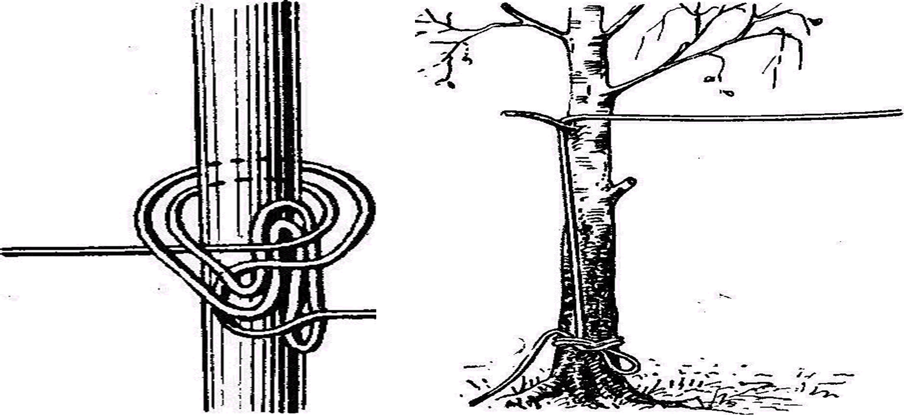Рис. 1. Переход кабельной линии с земли на деревья
Правила устройства переходов через препятствия и преграды.
Переход кабеля через шоссейные и железные дороги осуществляется, как правило, по водосточным трубам, мостам или по горизонтальным проходам, оборудуемым путем бурения насыпи с помощью специальных механизмов. Переходы через железные дороги, кроме того, могут осуществляться укладкой кабеля между шпалами железнодорожного пути с заглублением его в грунт на глубину не менее 10 см.
Переходы через грунтовые дороги(Рис.2) как правило, осуществляются путем отрывки вручную поперечной траншеи на глубину не менее 1 м с укладкой в ней стальной, асбестоцементной трубы или короба из досок. При этом труба (короб) должна быть выведена по обе стороны от подошвы или полевой бровки кювета на расстояние не менее 1,5 м.
Через шоссейные и грунтовые дороги(Рис.3)и в исключительных случаях через неэлектрифицированные железные дороги могут оборудоваться воздушные переходы. Расстояние от подвешенного кабеля до полотна шоссейной или грунтовой дороги должно быть не менее 6 м, до полотна железной дороги – не менее 7 м. При этом для защиты линии от грозовых разрядов в летний период на опорах воздушного перехода оборудуются молниеотводы. Выше кабеля на расстоянии 75 см подвешивается провод (трос) диаметром не менее 4 мм, который соединяется с молниеотводом. Внизу конец молниеотвода длиной 10 м зарывается на глубину прокладки кабеля перпендикулярно к его трассе. При переходах через железные дороги кабель прокладывают под рельсами(Рис.4), мостами или в водосточных трубах. При устройстве перехода под рельсами, между шпалами и по обеим сторонам дороги прокапывается канавка, кабель разъединяется на ближайшем сростке, протягивается под рельсами через полотно, закапывается в канавку и закрепляется колышками на расстоянии 5 – 10 м от дороги. Воздушные переходы через неэлектрофицированные железные дороги устраиваются на высоте не менее 7,5 м от верхней части рельсов. При переходе кабеля через водные преграды (Рис.5) зависимости от их характера (ширина, глубина, скорость течения, наличие судоходства), времени прокладки, имеющихся в распоряжении технических средств, кабель может быть проложен с заглублением в дно реки кабелеукладчиком или по дну реки с плавучих средств. При прокладке кабеля с плавучих средств команда должна состоять из четырех человек: начальника команды, водителя или гребца и двух операторов.
Погружение и закрепление кабеля на дне реки при прокладке его с плавучих (Рис.6) средств осуществляется с помощью грузил массой 2 – 4 кг. В зависимости от скорости течения реки грузила на кабель укрепляются через 5 – 10 м. Крепление кабеля на берегах осуществляется укладкой его в два восьмеркообразных витка на кольях, как при укладке бухт. Кабель на берегах до уреза воды и, насколько возможно, под водой прокладывается в траншее глубиной 50 – 60 см. После прокладки кабеля через водную преграду и закрепления его на берегах необходимо произвести измерения электрических параметров на постоянном токе и при соответствии параметров нормам ТУ включить в линию. При оборудовании подводных переходов через узкие водные преграды находящийся под водой кабель не должен иметь соединительных муфт. Если ширина водной преграды больше строительной длины кабеля, необходимо предусмотреть дополнительную герметизацию соединительных муфт. Для обеспечения живучести ПКЛ подводные кабельные переходы оборудуются одновременно не менее чем на двух участках с разносом кабелей на расстояние не менее 50 м один от другого. Для контроля за состоянием кабельных переходов, профилактических измерений и удобств эксплуатации на берегах судоходных рек должны оборудоваться КТП, в которых заводятся полумуфты основного и резервного кабелей. Между КТП устанавливается телефонная связь по одной из цепей резервного подводного кабеля.
На судоходных реках и каналах места расположения подводных переходов для предохранения кабеля от повреждения волокушами барж, судовыми якорями и цепями обозначаются предупредительными знаками.
Переходы через заболоченные участки местности следует осуществлять только в исключительных случаях, когда обход невозможен. При этом для предохранения от попадания влаги соединительные муфты располагаются в сухих местах с использованием кустарников, кочек и других местных предметов.
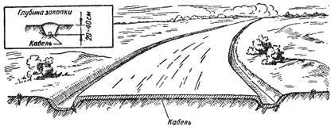Рис. 2 . Устройство перехода кабельной линии через грунтовую дорогу.
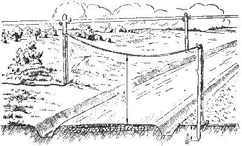Рис. 3. Устройство воздушного перехода кабельной линии через дорогу с покрытием.
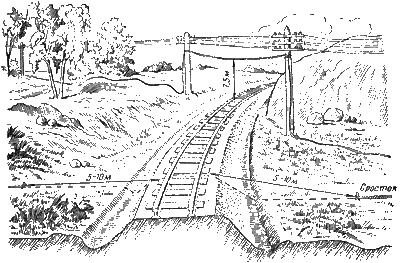Рис. 4. Устройство перехода кабельной линии через железную дорогу.
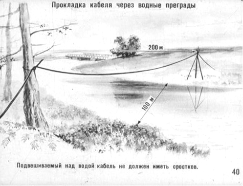Рис. 5. Прокладка кабеля через водные преграды.
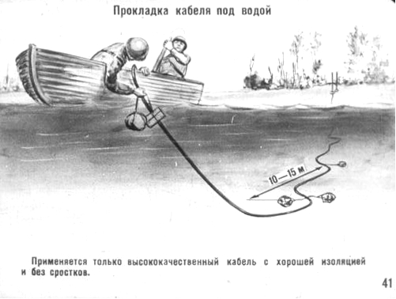Рис.6.Прокладка кабеля под водой.
3. Порядок снятия полевых кабельных линий связи.
Снятие линий производится по приказанию непосредственного начальника или с разрешения того командира, для связи с которым она была проложена.
В приказании на снятие линии указывается, с какого времени начать снятие линии, куда и по какому маршруту следовать после снятия линии и к какому сроку прибыть. О снятии линии командир отделения (старший команды) при первой возможности докладывает своему непосредственному начальнику.
В зависимости от обстановки и предстоящей задачи линия может сниматься с одного или одновременно с двух пунктов.
Снятие легкой полевой кабельной линии, проложенной на поверхности земли или в открытой траншее при помощи машины П-283М (П-283), выполняется в следующем порядке:
- кабелеукладчик переводится в транспортное положение;
- 2-й номер пропускает конец кабеля через ролики на крыше кабины и компенсаторы, заправляет его в рамку намоточного станка и на барабан, выводит через отверстие оси рамки и подключает к телефонному аппарату; включает станок и подтягивает кабель с линии; дает сигнал водителю о движении машины; совместно с 1-м номером снимает бухты со станка и укладывает в контейнеры (бункеры);
- 1-й номер помогает 2-му снимать и укладывать бухты кабеля.
При снятии линии, проложенной в закрытой щели, кабель сначала необходимо открыть, а затем смотать.
Эти операции можно выполнять одновременно или раздельно.
При одновременном выполнении операций кабелеукладчик переводится в рабочее положение, навешивается вскрывающий корпус и устанавливается глубина вскрытия на 5—10 см меньше глубины прокладки кабеля. Начальный конец кабеля пропускается через ролик вскрывающего корпуса, направляющий ролик на стойке кабелеукладчика, ролики на задней и передней дугах тента, ролики компенсатора на рамку намоточного механизма и барабан.
Машина двигается по видимому следу трассы, отрывая и наматывая кабель в бухты.
При раздельном выполнении операций машина сначала отрывает кабель, двигаясь по следу трассы, а затем, проходя по трассе второй раз, сматывает его. Снятие легких полевых кабельных линий ручным способом отделение выполняет в следующем порядке:
- 4-й и 5-й номера производят демаскирование линии, открепляют кабель от местных предметов и колышков, снимают переходы линии через дороги, овраги и прочие препятствия;
- 3-й номер рассоединяет строительные длины кабеля;
- 1-й и 2-й номера поочередно снимают строительные длины кабеля, наматывая его на катушки.
Если линия снимается с оконечной станции в сторону начальной, то 6-й номер дежурит у телефонного аппарата, включенного в линию до конца ее снятия.
При снятии линия от начальной станции в сторону оконечной 6-й номер выполняет обязанности 2-го номера по намотке кабеля, а последний дежурит у телефонного аппарата на оконечной станции. Для снятия линии одновременно с двух пунктов командир отделения разбивает отделение на две команды; каждая команда снимает линию самостоятельно на указанном командиром участке.
Снятие полевых кабельных линий дальней связи, проложенных по поверхности и заглубленных в грунт, производится, как правило, при помощи машины с кабелеукладчиком П-284. Кроме того, снятие линий, проложенных по поверхности грунта, может производиться при помощи тележек П-281М и транспортных машин.
При снятии липни, проложенной по поверхности грунта, команда работает в следующем порядке.
Командир (оператор № 1) ставит команде задачу на снятие линии, проверяет знание обязанностей по снятию линии операторами; совместно с оператором № 2 принимает начальный конец кабеля от операторов № 3 и 4, пропускает его через направляющую систему и закрепляет соединительную полумуфту в отсеке барабана; проверяет работоспособность механизмов и дает водителю команду начать движение; в процессе работы по снятию кабеля следит за тем, чтобы натяжение кабеля не превышало 25—40 кг, и регулирует его; при подходе соединительной муфты к роликам компенсатора дает команду на остановку машины, вместе с оператором № 2 разъединяет соединительные полумуфты и доматывает кабель вручную; вместе с оператором № 2 перезаряжает барабаны в размоточно-намоточном устройстве.
Оператор № 2 совместно с оператором № 1 принимает начальный конец кабеля, пропускает его через направляющую систему и закрепляет соединительную полумуфту, управляет механизмами при снятии линии; перезаряжает барабаны и совместно с операторами № 3 и 4 загружает транспортный автомобиль барабанами с кабелем.
Операторы № 3 и 4 передают начальный конец кабеля оператору № 1, идут впереди машины и освобождают кабель в местах его крепления; загружают барабаны с кабелем в транспортный автомобиль. Водитель обеспечивает прямолинейность хода машины по трассе кабеля, выполняет команды оператора № 1.
При снятии линии, проложенной с заглублением в грунт, операторы дополнительно производят следующие работы:
- оператор № 1 дает указание водителю установить машину точно над трассой кабеля в 3—4 м за начальной полумуфтой, производит заглубление вскапывающего плуга с таким расчетом, чтобы над кабелем после отрывки траншеи оставался слой грунта не более 10 см; в процессе снятия линии следит за тем, чтобы за машиной оставалась петля длиной 10—15 м;
- операторы № 3 и 4 перед началом работы переводят нож кабелеукладчика из транспортного положения в рабочее, укрепляют на нем вскапывающий плуг, лопатами отрывают кабель на 3—4 м до места заглубления вскапывающего плуга; при движении машины идут за кабелеукладчиком, следят за тем, чтобы вскапывающий плуг правильно располагался относительно кабеля, и докладывает командиру о необходимости изменения направления движения машины; после извлечения из грунта первых 10—15 м кабеля передают соединительную полумуфту операторам № 1 и 2; при значительных натяжениях кабеля вследствие отклонения машины от трассы подтаскивают кабель, откалывают вручную кабель в местах расположения соединительных полумуфт, разъединяют полумуфты.
Снятие полевых кабельных линий дальней связи при помощи тележек П-281М (П-281) производится обычно одновременно с двух пунктов. Для этого отделение разбивается на две команды. В состав первой команды, работой которой руководит командир отделения, входят 1, 2, 6 и 7-й номера. В состав второй команды, работой которой руководит 5-й номер, входят 3, 4, 5 и 8-й номера.
Каждая команда работает самостоятельно, снимая линию на своем участке.